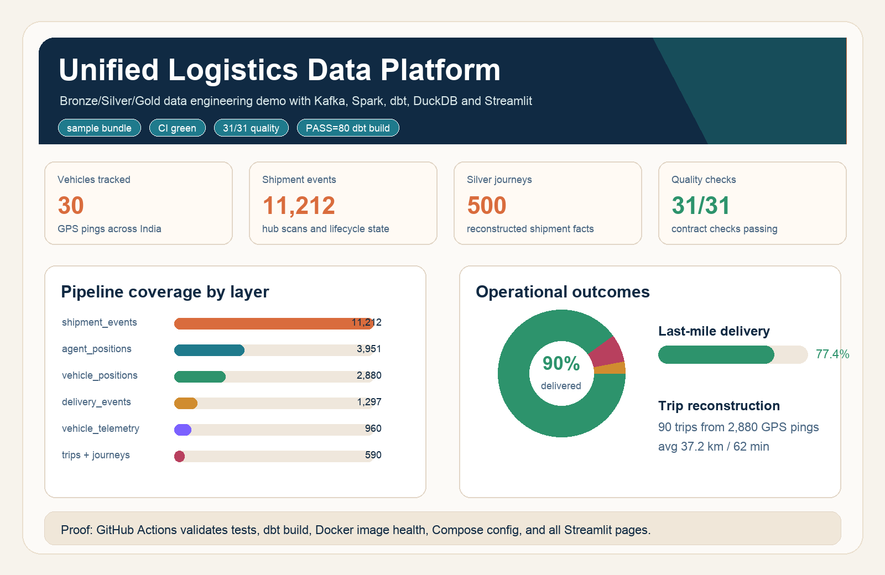

Operational domains
Fleet telematics, shipment tracking, and last-mile delivery share contracts and data layers.
Data engineering portfolio project
A working logistics data stack that simulates operational events, lands Bronze parquet, reconstructs Silver entities, models Gold marts in dbt and DuckDB, validates contracts, and presents the result in Streamlit.
Dashboard state from the sample bundle
The static preview is generated from the same sample parquet and quality artifacts shipped in the repository. The full Streamlit app adds sidebar navigation, maps, Plotly charts, data-quality detail, and an architecture page.

What the system demonstrates
Fleet telematics, shipment tracking, and last-mile delivery share contracts and data layers.
dbt builds staging, intermediate, and mart models with tested fact and dimension tables.
GitHub Actions validates Python tests, dbt, Docker health, Compose config, and Streamlit rendering.
Recruiter demo paths